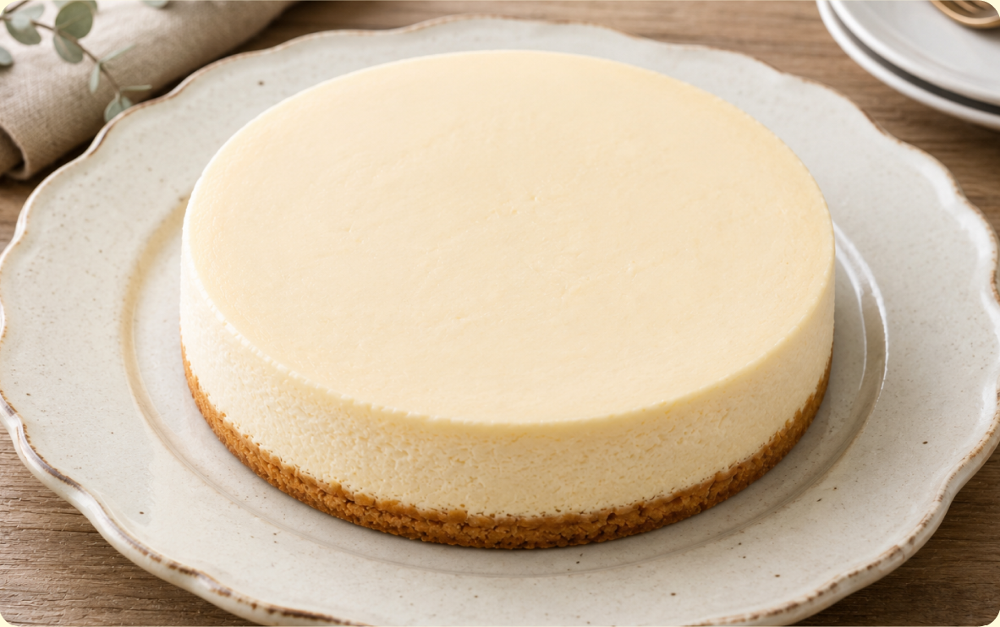
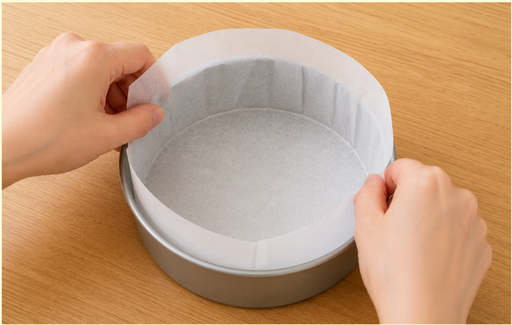
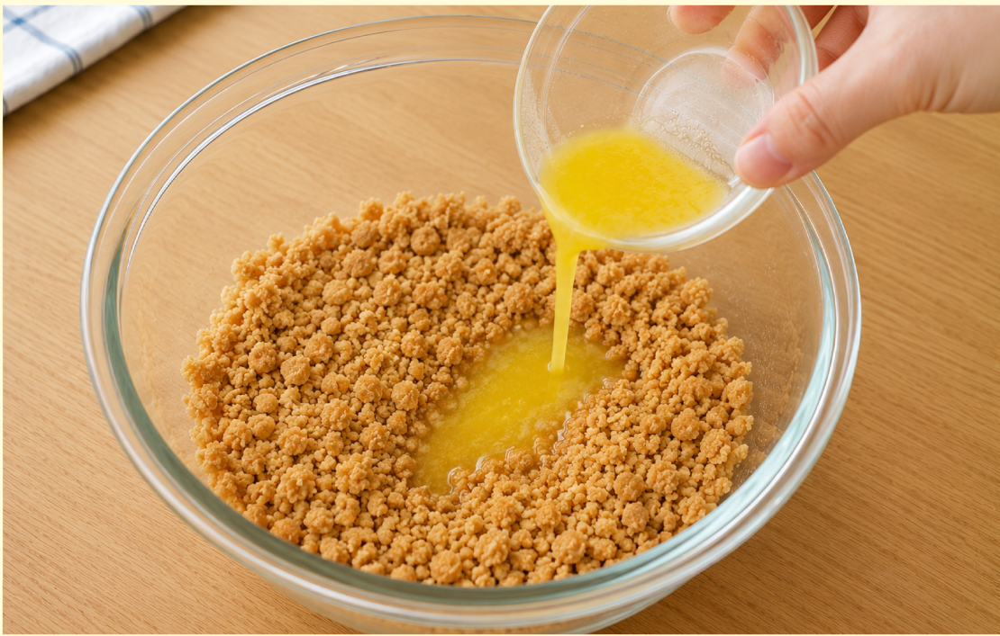
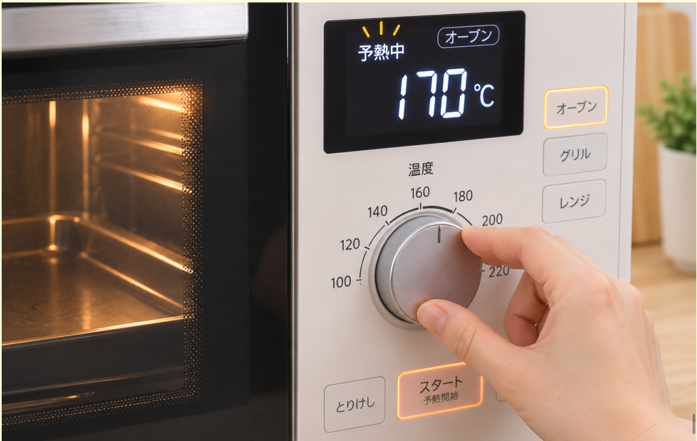
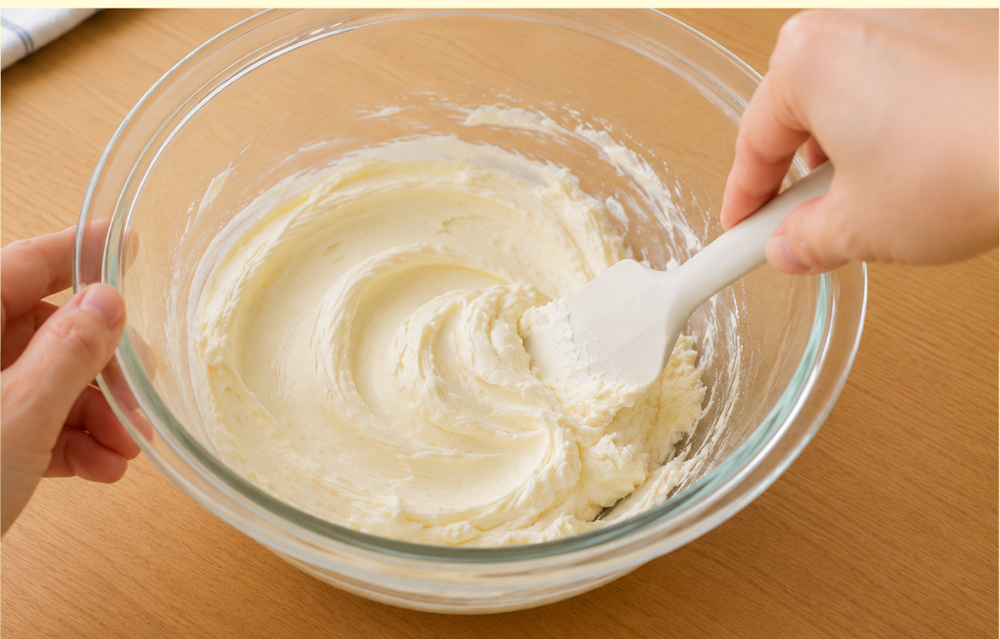
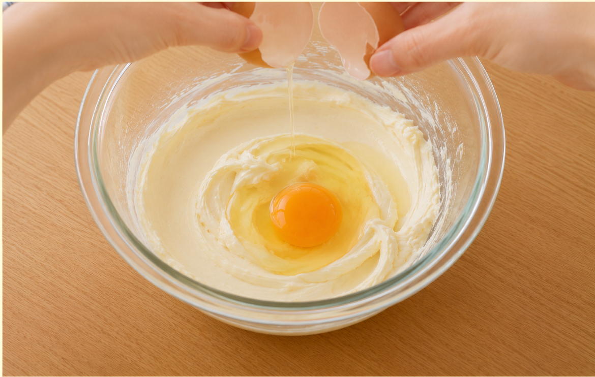
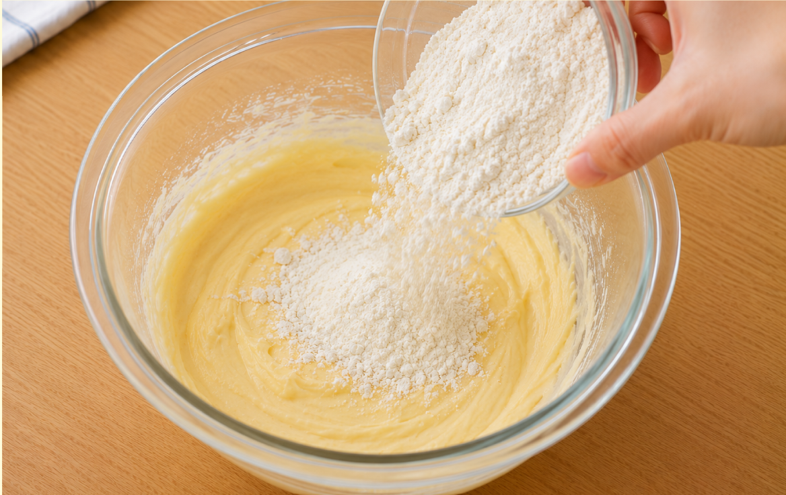
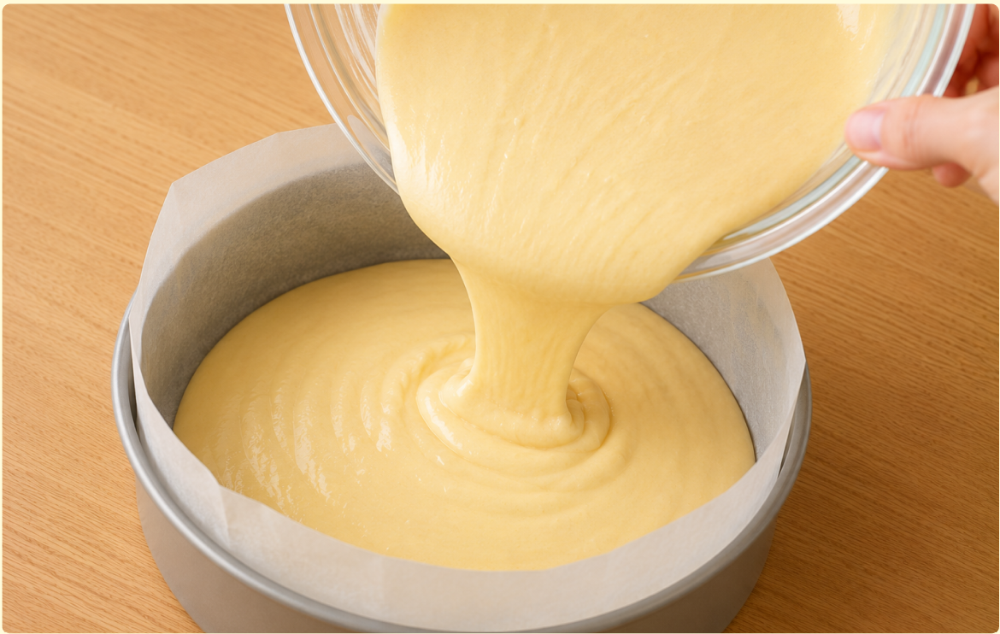
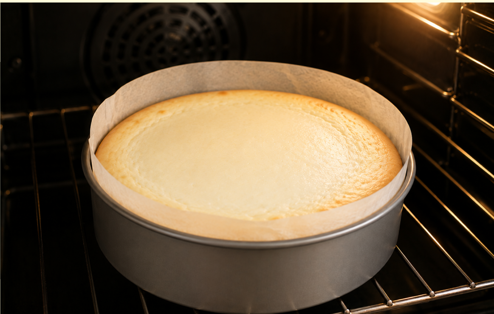
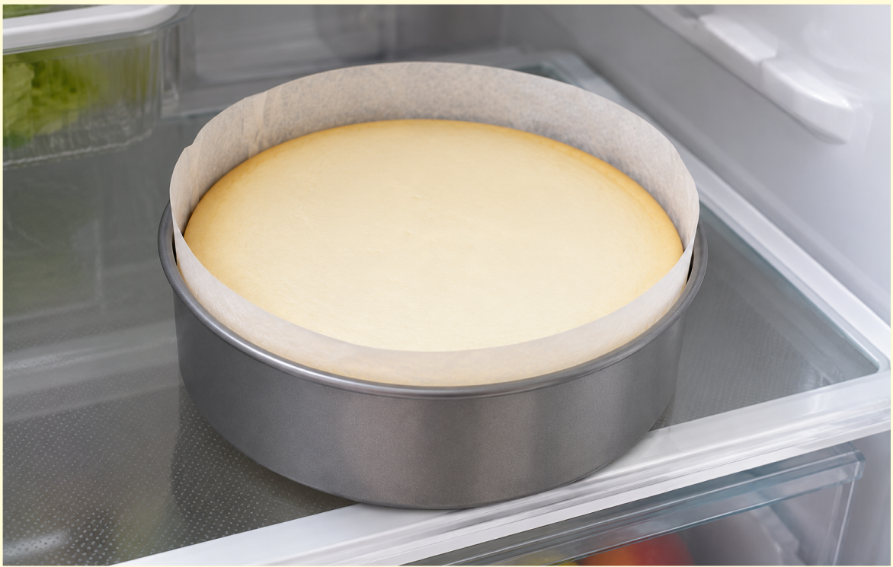

難易度３
★★★
材料（一人分）
- ・クリームチーズ200g
- ・砂糖60g
- ・卵2個
- ・生クリーム100ml
- ・薄力粉20g
- ・レモン汁大さじ1
- 土台（お好みで）
- ・ビスケット70g
- ・溶かしバター35g
必要な道具
- ・15cm丸形ケーキ型
- ・クッキングシート
- ・ボウル
- ・泡立て器
- ・オーブン
注目ポイント
- 火を使わない
-
 包丁を使わない
包丁を使わない - 予熱をしてから調理
作り方
① ケーキ型にクッキングシートを敷きます。ケーキ型用のクッキングシートを使うと楽です。

② 土台を作る場合は、ビスケットを細かく砕き、溶かしバターと混ぜます。型の底に敷き詰め、スプーンの背でしっかり押さえます。

③ オーブンを170℃に予熱します。

④ 常温に戻したクリームチーズをボウルに入れ、なめらかになるまで混ぜます。

⑤ 砂糖を加えて混ぜ、溶いた卵を2回に分けて加え、その都度よく混ぜます。

⑥ 生クリーム、薄力粉、レモン汁を加えてなめらかになるまで混ぜます。

⑦ 生地を型に流し入れ、型を軽くトントンと落として空気を抜きます。

⑧ 170℃のオーブンで35～40分焼きます。表面に焼き色がつき、中心が少し揺れる程度で焼き上がりです。

⑨ 焼き上がったら型のまま粗熱を取り、冷蔵庫で3時間以上冷やします。しっかり冷えたら型から外して完成です。

調理のコツ
長く焼きすぎると、ひび割れの原因になります。
1～2分くらい揺れる程度で焼き上げるのがポイントです。
味付けの目安
レモン汁を入れないと、しっとり感が残り、しっかりとした味になります。
少し酸味がほしい場合は、レモン汁を少し増やすと良いでしょう。